library(StereoMorph)
library(readr)
library(geomorph)
library(ggplot2)
library(lmerTest)
library(lme4)
library(gridExtra)
library(cowplot)
library(Morpho)
library(tidyverse)
library(car)
library(ggsci)
library(RColorBrewer)
library(gridGraphics)
library(ggpubr)setwd("~/Desktop/ECOMORFOLOGiA/Proyecto taliepus/TESIS")
#IMPORTO DIGITALIZACIÓN (DIGIDATA) Y CLASIFICADORES (TRAIT), LINKS
#REORDENO DIGITALIZACIÓN (array_data)
DIGIDAT<-readShapes("/Users/lucasb/Dropbox/Mac/Desktop/ECOMORFOLOGiA/Proyecto taliepus/TESIS/zoea1-5-8")
array_data<-readland.shapes(DIGIDAT, nCurvePts= c(7,7))
traitF<- read_delim("trait1-5-8.txt",
delim = "\t", escape_double = FALSE,
trim_ws = TRUE)
linkscva<-list(c(1,8:8,9:9,10:10,11:11,12:12,7),c(3,5:4,5:4,6:6,3),c(1,13:13,14:14,15:15,16:16,17:17,2))
linksgeo <- read_delim("links.txt", delim = "\t",
escape_double = FALSE, col_names = FALSE,
trim_ws = TRUE)
linksgeo<-as.matrix(linksgeo)
traitF$Temp<- as.factor(traitF$Temp)
traitF$Replica<-as.factor(traitF$Replica)
traitF$Dia<-as.factor(traitF$Dia)GPA<- gpagen(array_data,
ProcD=FALSE, print.progress = FALSE, curves = array_data$curves) #procD=false, bending energy is the correct criterion for optimizing the positions of semilandmarks
gdf<- geomorph.data.frame(GPA, Temp=traitF$Temp, horas= traitF$Horas, replica=traitF$Replica, Dia=traitF$Dia)
summary(GPA)##
## Call:
## gpagen(A = array_data, curves = array_data$curves, ProcD = FALSE,
## print.progress = FALSE)
##
##
##
## Generalized Procrustes Analysis
## with Partial Procrustes Superimposition
##
## 7 fixed landmarks
## 10 semilandmarks (sliders)
## 2-dimensional landmarks
## 11 GPA iterations to converge
## Minimized Bending Energy used
##
##
## Consensus (mean) Configuration
##
## X Y
## punta_espina_dorsal -0.341841028 0.01731614
## esq_izq_caparaza -0.085068726 -0.25314593
## superior_ojo 0.229966648 -0.01850680
## inferior_ojo 0.447884478 -0.01607858
## derecha_ojo 0.342104485 0.05607758
## izquierda_ojo 0.334606398 -0.09936267
## organo_dorsal 0.149644393 0.14327407
## curveLM.8 -0.260898115 0.04558196
## curveLM.9 -0.171845951 0.06012997
## curveLM.10 -0.083052978 0.06821003
## curveLM.11 0.001610384 0.06663808
## curveLM.12 0.080273940 0.09577316
## curveLM.13 -0.247712345 0.02981819
## curveLM.14 -0.150332728 0.03258600
## curveLM.15 -0.063705797 0.01141165
## curveLM.16 -0.063968774 -0.07874820
## curveLM.17 -0.100289354 -0.16482681ref<-mshape(GPA$coords)
plot(ref, links = linksgeo)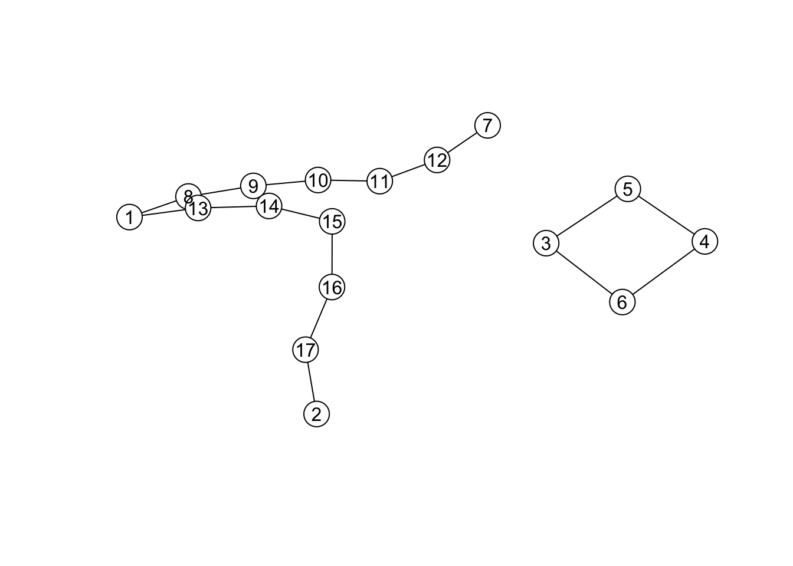
plotAllSpecimens(GPA$coords, links = linksgeo, plot.param = list(txt.cex = 1.5, txt.col = "#D53E4F", pt.bg = "#BDBDBD", link.col = "black", mean.bg = "black")) + title("alligned specimens")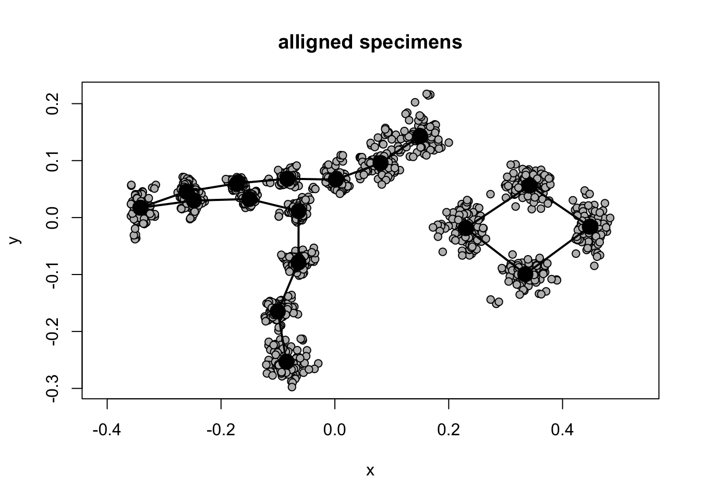
## integer(0)PCA<-gm.prcomp(GPA$coords)
df_out <- as.data.frame(PCA$x)
pcaD<-ggplot(data=df_out, aes(x=Comp1, y=Comp2, shape=gdf$Dia, col=gdf$Temp)) + geom_point(size=3) + theme_light() + labs(x="PC1=32%", y="PC2=20%", shape="Día", col="Temperatura", title = "Análisis de Componentes principales")
pcaD + scale_color_manual(values =c("blue", "darkorange", "red"))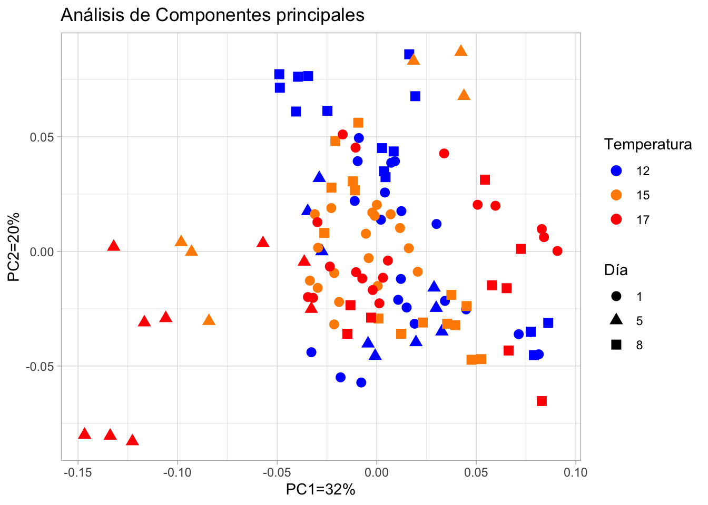
summaryPCA<-summary(PCA)##
## Ordination type: Principal Component Analysis
## Centering by OLS mean
## Orthogonal projection of OLS residuals
## Number of observations: 120
## Number of vectors 33
##
## Importance of Components:
## Comp1 Comp2 Comp3 Comp4 Comp5
## Eigenvalues 0.002305977 0.00143727 0.001305145 0.0006670557 0.0004328794
## Proportion of Variance 0.321577928 0.20043323 0.182007823 0.0930236655 0.0603668107
## Cumulative Proportion 0.321577928 0.52201116 0.704018983 0.7970426486 0.8574094593
## Comp6 Comp7 Comp8 Comp9
## Eigenvalues 0.0003270445 0.0002694576 0.0001038828 7.778109e-05
## Proportion of Variance 0.0456077014 0.0375769773 0.0144868845 1.084689e-02
## Cumulative Proportion 0.9030171608 0.9405941381 0.9550810226 9.659279e-01
## Comp10 Comp11 Comp12 Comp13
## Eigenvalues 5.900533e-05 4.746444e-05 4.068929e-05 3.122884e-05
## Proportion of Variance 8.228536e-03 6.619111e-03 5.674289e-03 4.354990e-03
## Cumulative Proportion 9.741565e-01 9.807756e-01 9.864499e-01 9.908048e-01
## Comp14 Comp15 Comp16 Comp17
## Eigenvalues 1.727991e-05 1.621685e-05 8.548117e-06 6.504770e-06
## Proportion of Variance 2.409755e-03 2.261506e-03 1.192070e-03 9.071169e-04
## Cumulative Proportion 9.932146e-01 9.954761e-01 9.966682e-01 9.975753e-01
## Comp18 Comp19 Comp20 Comp21
## Eigenvalues 5.600075e-06 3.800367e-06 2.597828e-06 2.490454e-06
## Proportion of Variance 7.809535e-04 5.299768e-04 3.622778e-04 3.473041e-04
## Cumulative Proportion 9.983562e-01 9.988862e-01 9.992485e-01 9.995958e-01
## Comp22 Comp23 Comp24 Comp25
## Eigenvalues 1.563432e-06 9.516556e-07 1.280169e-07 9.754247e-08
## Proportion of Variance 2.180271e-04 1.327123e-04 1.785248e-05 1.360270e-05
## Cumulative Proportion 9.998138e-01 9.999465e-01 9.999644e-01 9.999780e-01
## Comp26 Comp27 Comp28 Comp29
## Eigenvalues 5.418605e-08 3.866308e-08 2.534770e-08 1.671369e-08
## Proportion of Variance 7.556468e-06 5.391726e-06 3.534841e-06 2.330793e-06
## Cumulative Proportion 9.999856e-01 9.999909e-01 9.999945e-01 9.999968e-01
## Comp30 Comp31 Comp32 Comp33
## Eigenvalues 1.183563e-08 6.365831e-09 4.675625e-09 1.078808e-18
## Proportion of Variance 1.650528e-06 8.877413e-07 6.520352e-07 1.504442e-16
## Cumulative Proportion 9.999985e-01 9.999993e-01 1.000000e+00 1.000000e+00summaryPCA<-as.data.frame(summaryPCA$PC.summary, row.names = NULL)
summaryPCA<-t(summaryPCA)
colnames(summaryPCA) <- c("Eigenvalues", "Variance", "Cumulative")
summaryPCA<-as.data.frame(summaryPCA)
#Primeros 6 demuestran el 90% de la varianza. primeros 3 tienen sobre un 10%.
pcarank<-barplot(PCA$sdev^2/sum(PCA$sdev^2),ylab="% de Varianza", xlab = "Componentes principales", names=1:33) +
title("Ranking de los Componentes Principales") 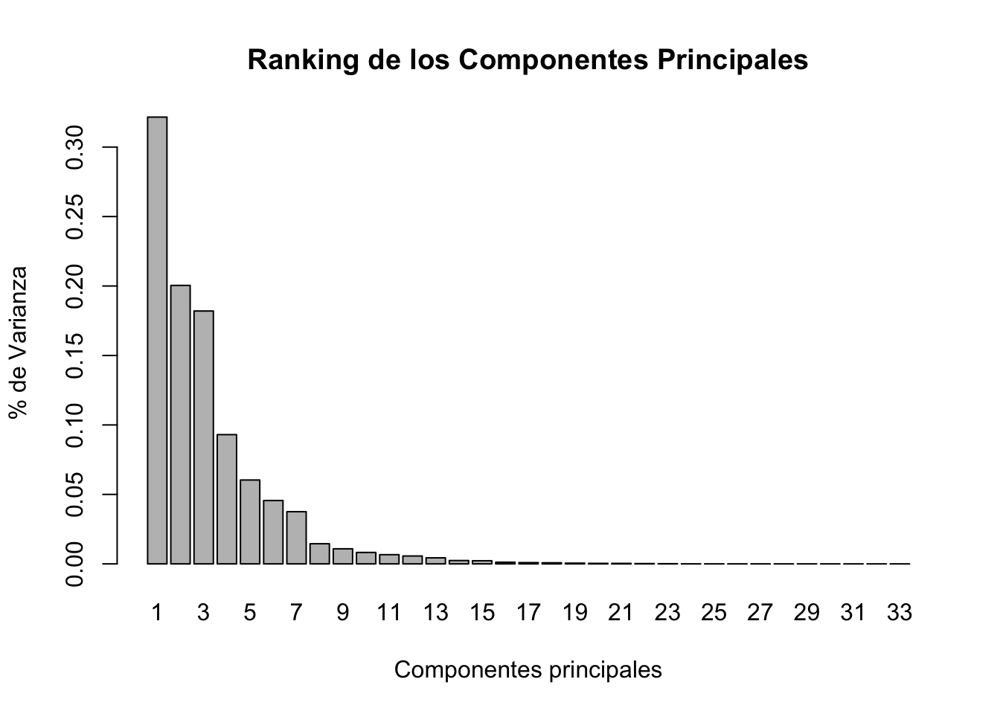 # Anova de Procrustes por Replica (error de digitalización)
#ANOVA DE PROCRUSTES REPLICAS
AnError<-procD.lm(coords~replica, data = gdf, iter = 999, RRPP = TRUE)
summary(AnError)##
## Analysis of Variance, using Residual Randomization
## Permutation procedure: Randomization of null model residuals
## Number of permutations: 1000
## Estimation method: Ordinary Least Squares
## Sums of Squares and Cross-products: Type I
## Effect sizes (Z) based on F distributions
##
## Df SS MS Rsq F Z Pr(>F)
## replica 39 0.76436 0.0195989 0.89574 17.623 10.813 0.001 **
## Residuals 80 0.08897 0.0011121 0.10426
## Total 119 0.85333
## ---
## Signif. codes: 0 '***' 0.001 '**' 0.01 '*' 0.05 '.' 0.1 ' ' 1
##
## Call: procD.lm(f1 = coords ~ replica, iter = 999, RRPP = TRUE, data = gdf)##replicas 0.0195(MS) 95%
##Residuals 0.00111(MS) 5%
## 5% de las variaciones se explica por un error de digitalización. Te<-traitF$Temp
coords_out<-as.data.frame(gdf$coords)
coords_out<-t(coords_out)
zoea.cva1<- CVA(gdf$coords, groups = Te, p.adjust.method = "bonferroni", rounds = 1000, robust = "classical")## singular Covariance matrix: General inverse is used. Threshold for zero eigenvalue is 1e-10Cva_out<-as.data.frame(zoea.cva1$CVscores)
Cva_out$Dia<-gdf$Dia
Cva_out$Temp<-gdf$Temp#Importación de traits, imagenes digitalizadas y GPA por día.
trait1<- read_delim("/Users/lucasb/Dropbox/Mac/Desktop/ECOMORFOLOGiA/Proyecto taliepus/TESIS/trait1.txt", show_col_types = FALSE)
trait5<- read_delim("/Users/lucasb/Dropbox/Mac/Desktop/ECOMORFOLOGiA/Proyecto taliepus/TESIS/trait5.txt", show_col_types = FALSE)
trait8<- read_delim("/Users/lucasb/Dropbox/Mac/Desktop/ECOMORFOLOGiA/Proyecto taliepus/TESIS/trait8.txt", show_col_types = FALSE)
trait1$Temp<-as.factor(trait1$Temp)
trait5$Temp<-as.factor(trait5$Temp)
trait8$Temp<-as.factor(trait8$Temp)
zoea1<-readShapes("/Users/lucasb/Dropbox/Mac/Desktop/ECOMORFOLOGiA/Proyecto taliepus/TESIS/zoea1")
zoea5<-readShapes("/Users/lucasb/Dropbox/Mac/Desktop/ECOMORFOLOGiA/Proyecto taliepus/TESIS/zoea5")
zoea8<-readShapes("/Users/lucasb/Dropbox/Mac/Desktop/ECOMORFOLOGiA/Proyecto taliepus/TESIS/zoea8")
array_data1<-readland.shapes(zoea1, nCurvePts= c(7,7))
array_data5<-readland.shapes(zoea5, nCurvePts= c(7,7))
array_data8<-readland.shapes(zoea8, nCurvePts= c(7,7))
GPA1<- gpagen(array_data1,
ProcD=FALSE, print.progress = FALSE, curves = array_data1$curves) #procD=false, bending energy is the correct criterion for optimizing the positions of semilandmarks
GPA5<-gpagen(array_data5,ProcD=FALSE, print.progress = FALSE, curves = array_data5$curves)
#procD=false, bending energy is the correct criterion for optimizing the positions of semilandmarks
GPA8<- gpagen(array_data8,
ProcD=FALSE, print.progress = FALSE, curves = array_data8$curves) #procD=false, bending energy is the correct criterion for optimizing the positions of semilandmarkscva1<- CVA(GPA1$coords, groups = trait1$Temp, p.adjust.method = "bonferroni", rounds = 1000, robust = "classical")## singular Covariance matrix: General inverse is used. Threshold for zero eigenvalue is 1e-10cva1[["Dist"]][["probsEuclid"]]## 12 15
## 15 0.003
## 17 0.093 0.006cva5<- CVA(GPA5$coords, groups = trait5$Temp, p.adjust.method = "bonferroni", rounds = 1000, robust = "classical")## singular Covariance matrix: General inverse is used. Threshold for zero eigenvalue is 1e-10cva5[["Dist"]][["probsEuclid"]]## 12 15
## 15 0.213
## 17 0.003 0.018cva8<- CVA(GPA8$coords, groups = trait8$Temp, p.adjust.method = "bonferroni", rounds = 1000, robust = "classical")## singular Covariance matrix: General inverse is used. Threshold for zero eigenvalue is 1e-10cva8[["Dist"]][["probsEuclid"]]## 12 15
## 15 0.018
## 17 0.003 0.039plotRefToTarget(zoea.cva1[["Grandm"]], cva1[["groupmeans"]][,,1], method ="points", links = linksgeo, axes = TRUE, label = TRUE, gridPars = gridPar(tar.pt.bg = "blue", tar.link.col="blue",tar.link.lwd=2, link.col = "grey", pt.bg = "grey", link.lwd = 2, pt.size = 1, tar.pt.size = 1.5))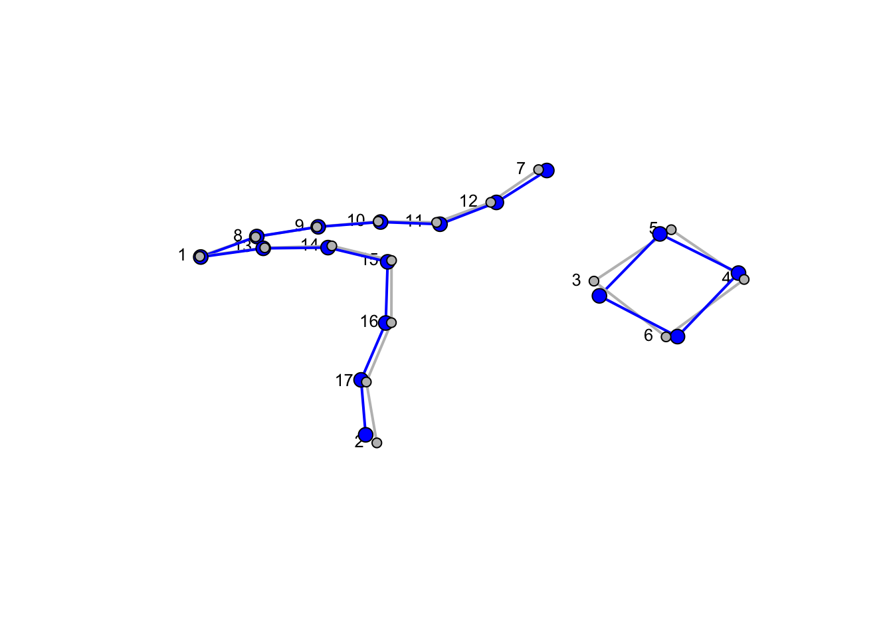
plotRefToTarget(zoea.cva1[["Grandm"]], cva1[["groupmeans"]][,,2], method ="points", links = linksgeo, axes = TRUE, label = TRUE, gridPars = gridPar(tar.pt.bg = "darkorange", tar.link.col="darkorange",tar.link.lwd=2, link.col = "grey", pt.bg = "grey", link.lwd = 2, pt.size = 1, tar.pt.size = 1.5))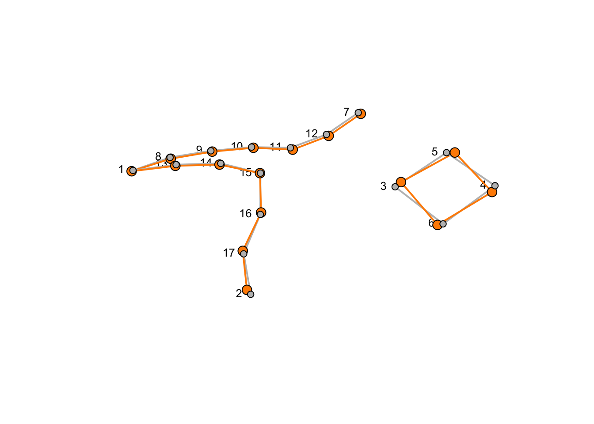
plotRefToTarget(zoea.cva1[["Grandm"]], cva1[["groupmeans"]][,,3], method ="points", links = linksgeo, axes = TRUE, label = TRUE, gridPars = gridPar(tar.pt.bg = "red", tar.link.col="red",tar.link.lwd=2, link.col = "grey", pt.bg = "grey", link.lwd = 2, pt.size = 1, tar.pt.size = 1.5))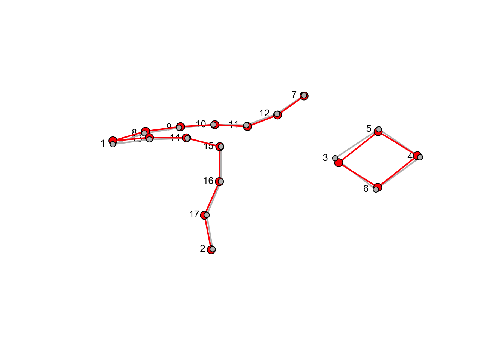
Cva_out1<-as.data.frame(Cva_out[Cva_out$Dia==1,])
ggplot(data=Cva_out1, aes(x=`CV 1`, y=`CV 2`, col=Temp)) + geom_point() + stat_ellipse(level = 0.7) + coord_fixed() +
labs(title = "Análisis de variables canónicas", x="Variable canónica 1 (76.4%)", y= "Variable canónica 2 (23.6%)", col= "Temperatura", subtitle = "Día 1") + theme_classic() + scale_color_manual(values =c("blue", "darkorange", "red"), labels=c("12°C","15°C","17°C"))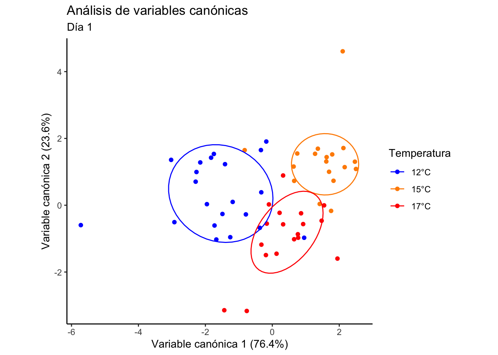 # Morphos promedio por temperatura vs consensus del total, grafico de morfoespacio de variables canónicas (día 5)
plotRefToTarget(zoea.cva1[["Grandm"]], cva5[["groupmeans"]][,,1], method ="points", links = linksgeo, label = TRUE, gridPars = gridPar(tar.pt.bg = "blue", tar.link.col="blue",tar.link.lwd=2, link.col = "grey", pt.bg = "grey", link.lwd = 2, pt.size = 1, tar.pt.size = 1.5))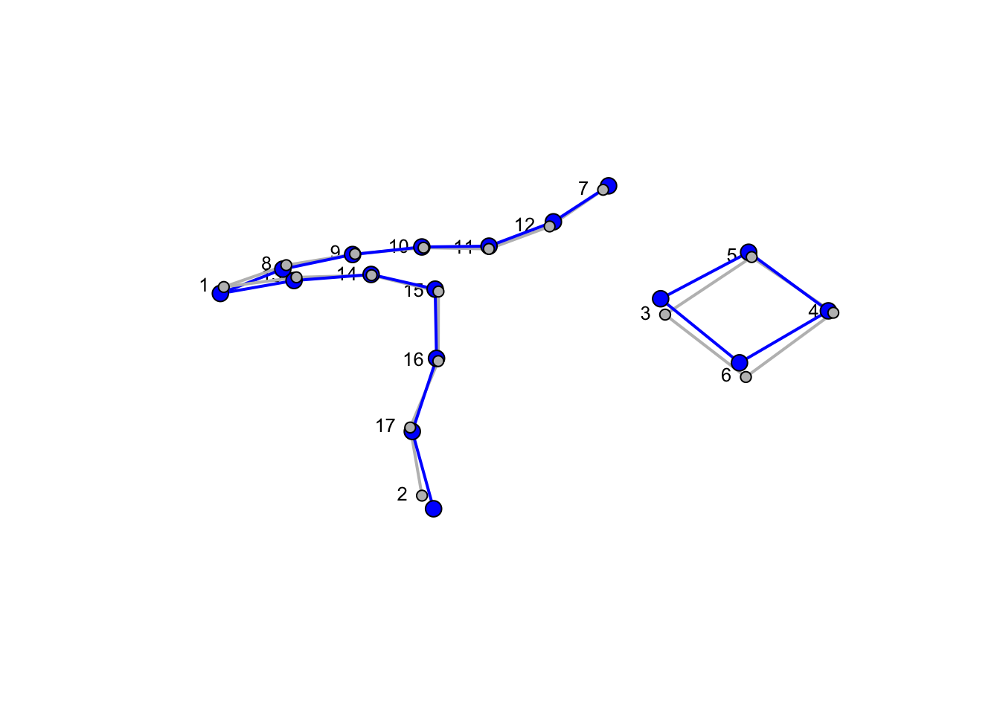
plotRefToTarget(zoea.cva1[["Grandm"]], cva5[["groupmeans"]][,,2], method ="points", links = linksgeo, label = TRUE, gridPars = gridPar(tar.pt.bg = "darkorange", tar.link.col="darkorange",tar.link.lwd=2, link.col = "grey", pt.bg = "grey", link.lwd = 2, pt.size = 1, tar.pt.size = 1.5))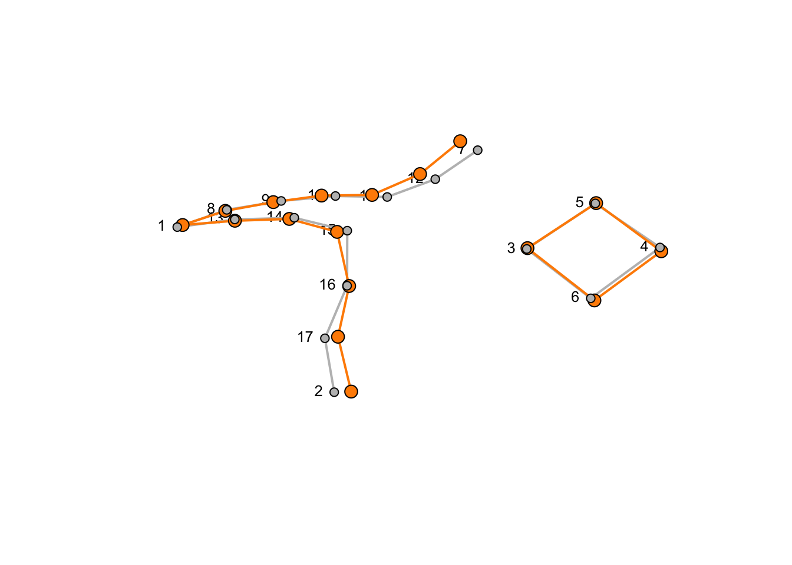
plotRefToTarget(zoea.cva1[["Grandm"]], cva5[["groupmeans"]][,,3], method ="points", links = linksgeo, label = TRUE, gridPars = gridPar(tar.pt.bg = "red", tar.link.col="red",tar.link.lwd=2, link.col = "grey", pt.bg = "grey", link.lwd = 2, pt.size = 1, tar.pt.size = 1.5))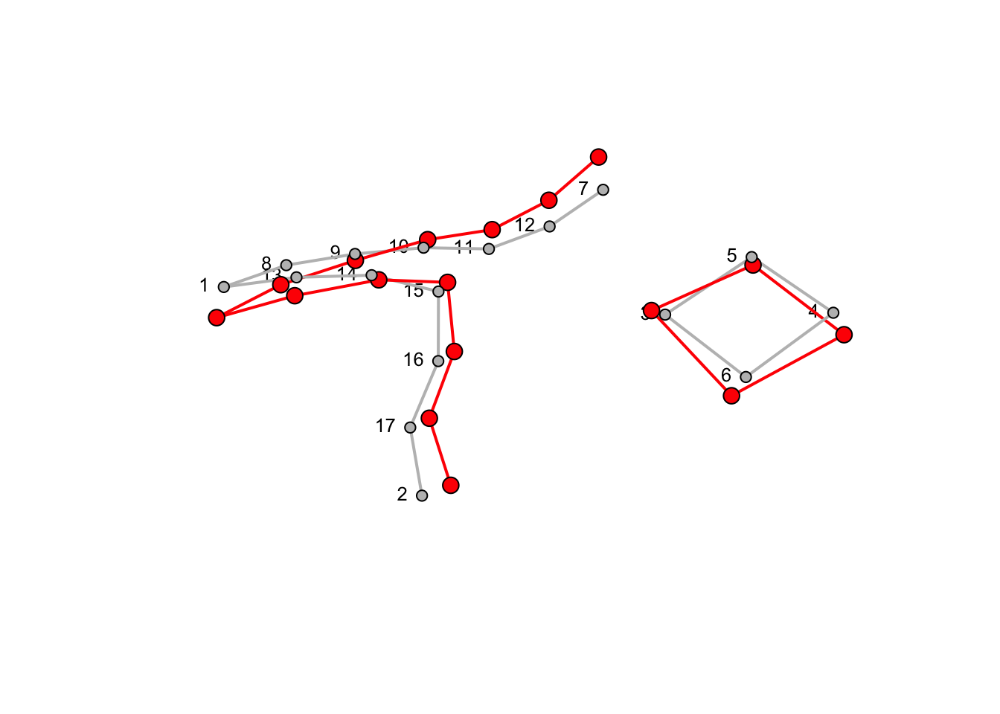
Cva_out5<-as.data.frame(Cva_out[Cva_out$Dia==5,])
ggplot(data=Cva_out5, aes(x=`CV 1`, y=`CV 2`, col=Temp)) + geom_point() + stat_ellipse(level = 0.70) + coord_fixed() +
labs(title = "Análisis de variables canónicas", x="Variable canónica 1 (77.4%)", y= "Variable canónica 2 (22.6%)", col= "Temperatura", subtitle = "Día 5") + theme_classic() + scale_color_manual(values =c("blue", "darkorange", "red"), labels=c("12°C","15°C","17°C"))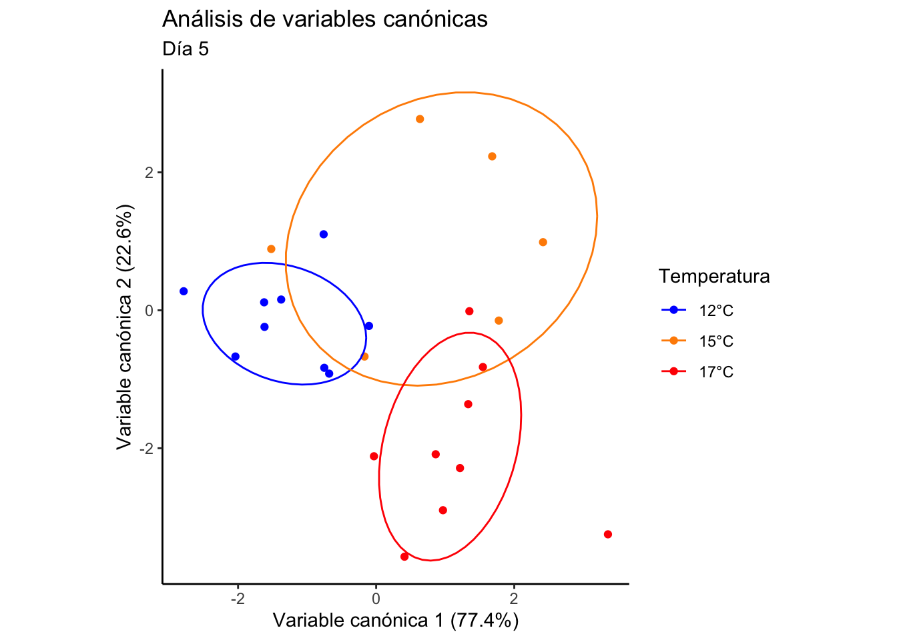
plotRefToTarget(zoea.cva1[["Grandm"]], cva8[["groupmeans"]][,,1], method ="points", links = linksgeo, label = TRUE, gridPars = gridPar(tar.pt.bg = "blue", tar.link.col="blue",tar.link.lwd=2, link.col = "grey", pt.bg = "grey", link.lwd = 2, pt.size = 1, tar.pt.size = 1.5))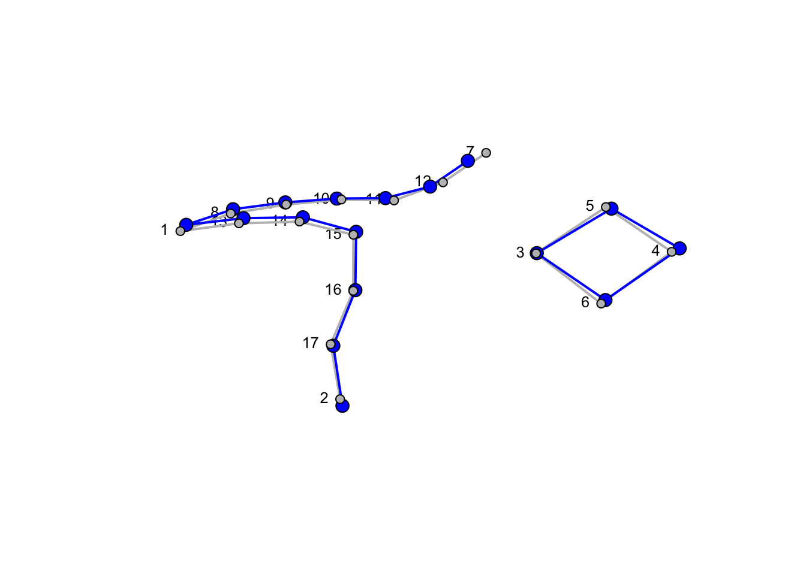
plotRefToTarget(zoea.cva1[["Grandm"]], cva8[["groupmeans"]][,,2], method ="points", links = linksgeo, label = TRUE, gridPars = gridPar(tar.pt.bg = "darkorange", tar.link.col="darkorange",tar.link.lwd=2, link.col = "grey", pt.bg = "grey", link.lwd = 2, pt.size = 1, tar.pt.size = 1.5))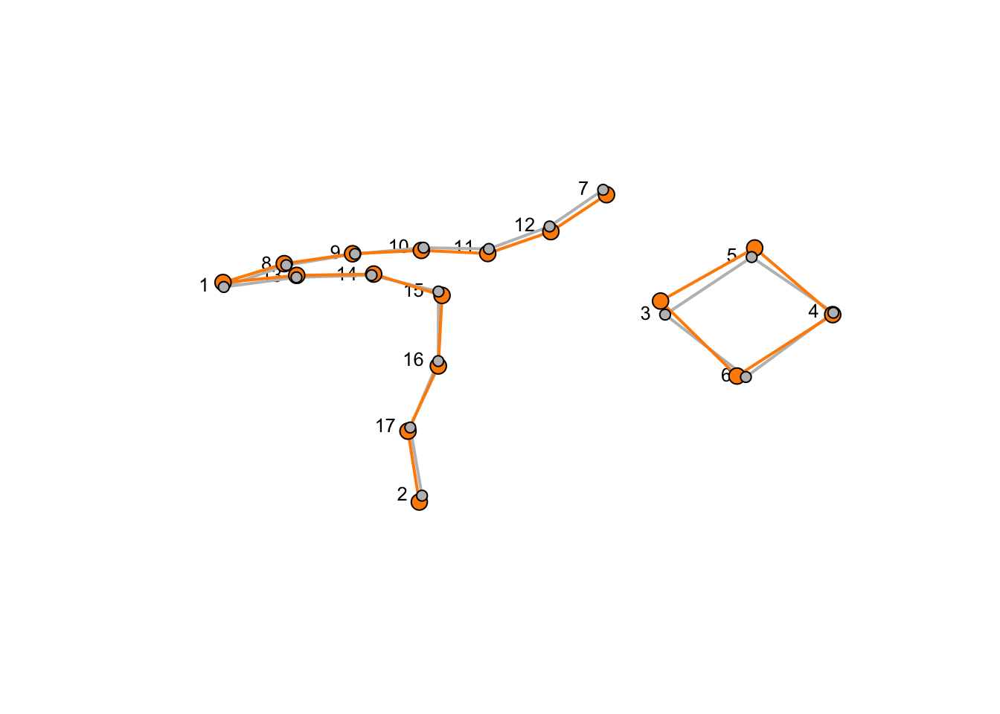
plotRefToTarget(zoea.cva1[["Grandm"]], cva8[["groupmeans"]][,,3], method ="points", links = linksgeo, label = TRUE, gridPars = gridPar(tar.pt.bg = "red", tar.link.col="red",tar.link.lwd=2, link.col = "grey", pt.bg = "grey", link.lwd = 2, pt.size = 1, tar.pt.size = 1.5))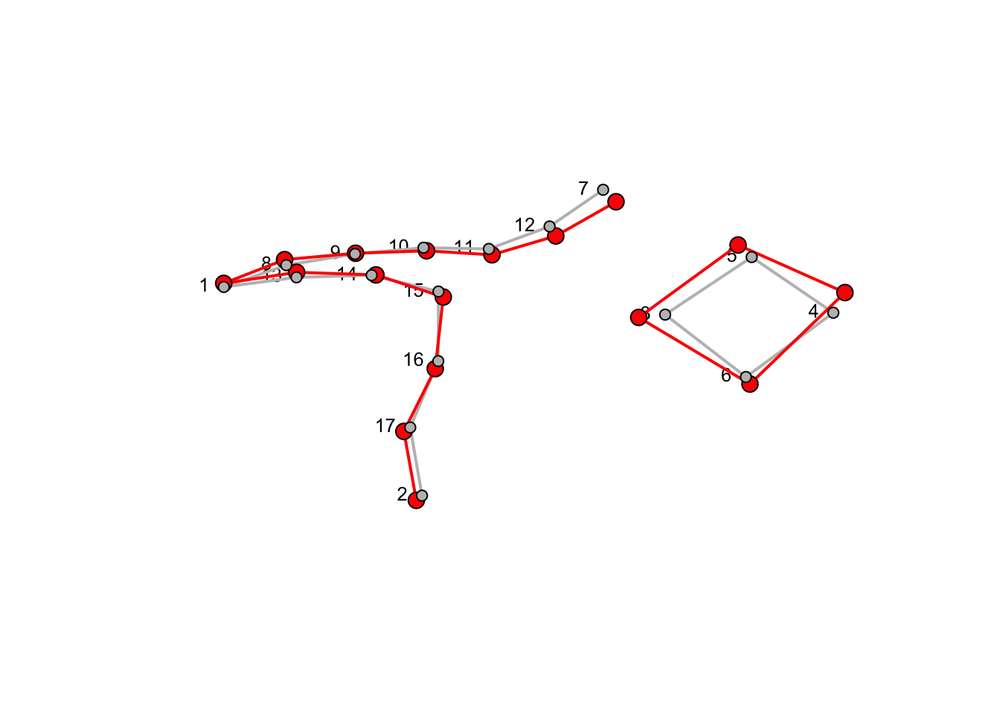
Cva_out8<-as.data.frame(Cva_out[Cva_out$Dia==8,])
ggplot(data=Cva_out8, aes(x=`CV 1`, y=`CV 2`, col=Temp)) + geom_point() + stat_ellipse(level = 0.8) + coord_fixed() +
labs(title = "Análisis de variables canónicas", x="Variable canónica 1 (79.1%)", y= "Variable canónica 2 (20.9%)", col= "Temperatura", subtitle = "Día 8") + theme_classic() + scale_color_manual(values =c("blue", "darkorange", "red"), labels=c("12°C","15°C","17°C"))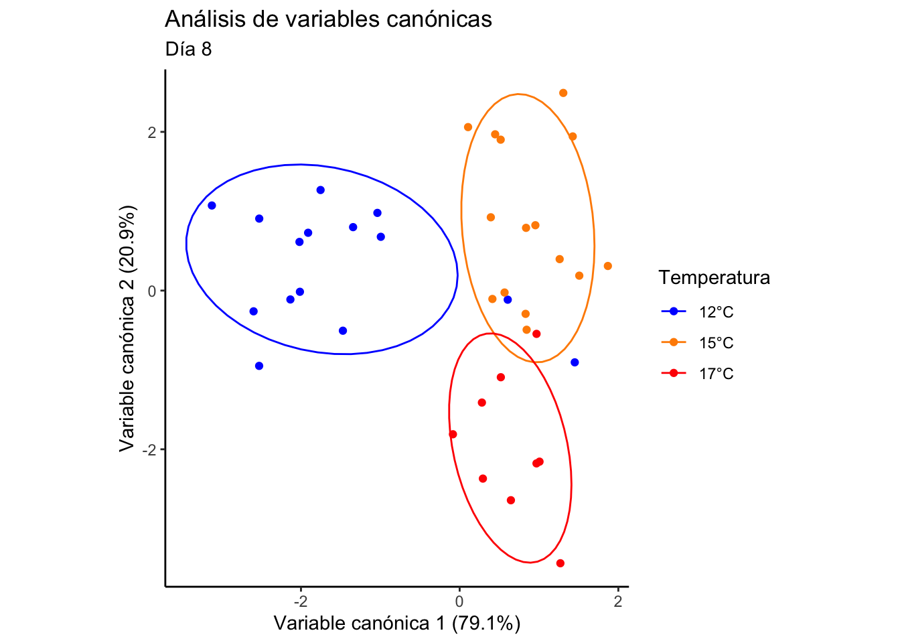